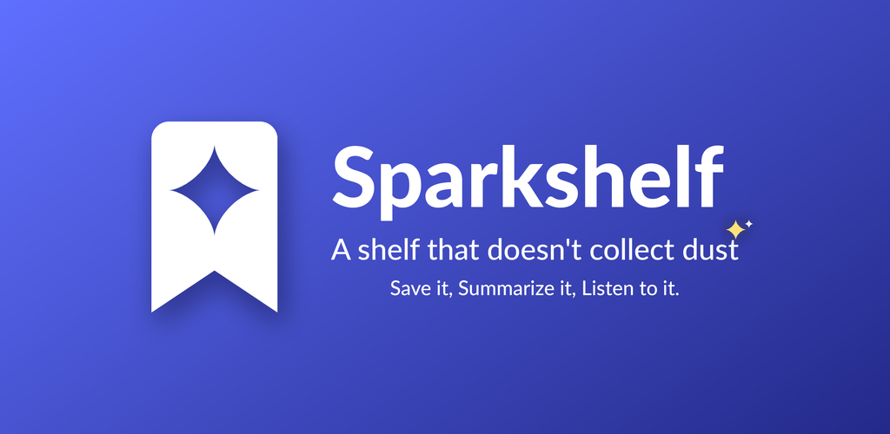

Bienvenue dans Sparkshelf
Sparkshelf garde ce que vous voulez lire dans un endroit calme. Ce guide est un article comme un autre : essayez tout dessus, puis supprimez-le quand vous avez fini.
Enregistrez tout
Partagez un lien vers Sparkshelf depuis n’importe quelle app, ou touchez + pour en coller un. Les PDF et EPUB fonctionnent aussi.
Lisez à votre façon
Les articles s’ouvrent en pages épurées, même hors ligne. Touchez Tt pour changer la taille, la police et le thème.
Surlignez et notez
Maintenez une phrase et choisissez Surligner. Touchez un surlignage pour écrire une note.
Résumez avec l’IA
Touchez Résumer pour un court résumé, ou l’étincelle pour Sagesse, Vérification et Discussion.
Écoutez
Touchez le casque pour écouter un article. Choisissez une voix dans Réglages → Lecture à voix haute.
Composez vos actualités
Dans Actus, ajoutez vos sujets et vos flux RSS, ou importez la liste d’un ami dans Réglages → Sources d’actualités.
À vous pour toujours
Tout reste sur votre téléphone. Connectez-vous seulement si vous voulez votre bibliothèque sur d’autres appareils.
C’est tout. Vous pouvez revoir la visite de l’app à tout moment dans Réglages → Guide de l’app.